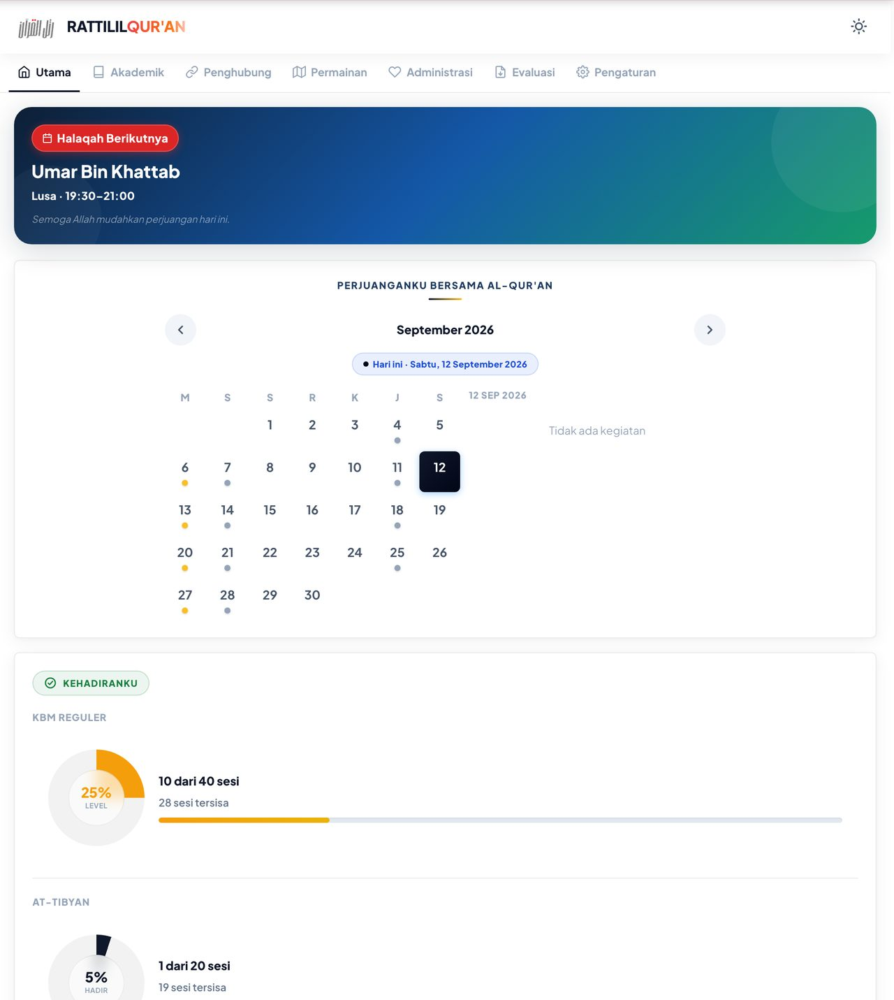
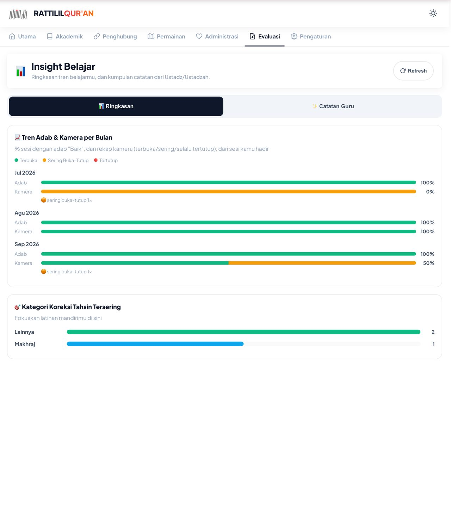
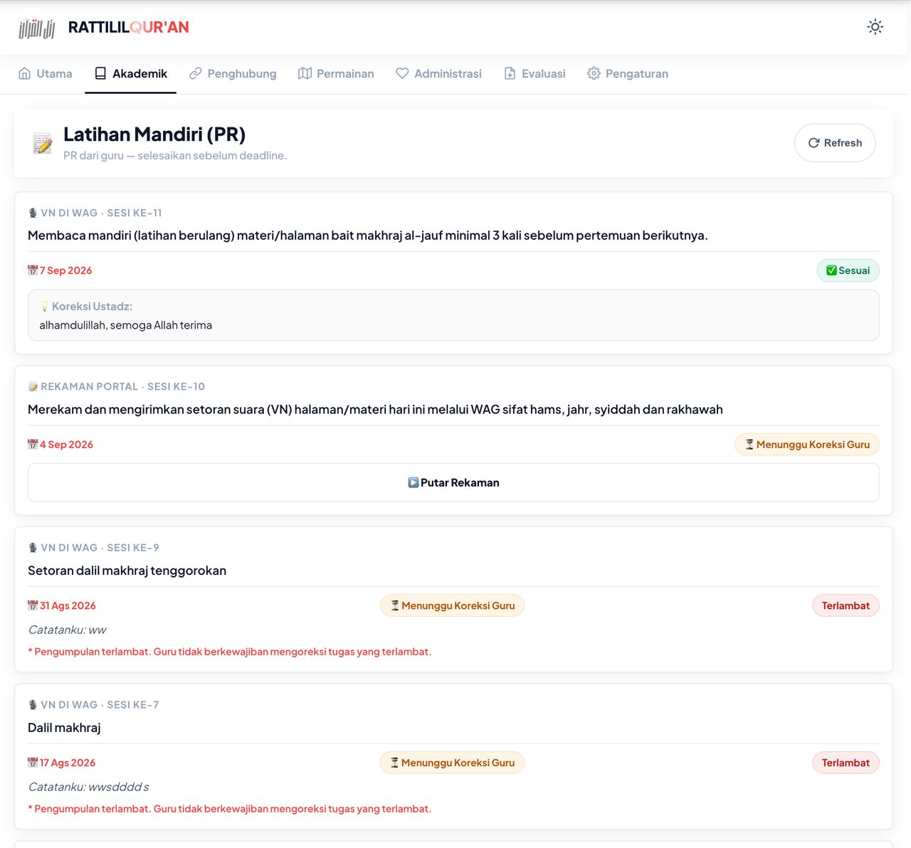
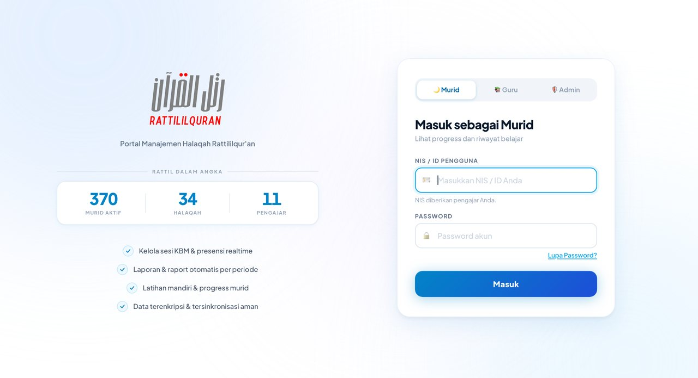

Untuk setiap murid Rattililqur'an
Portal Murid Rattililqur'an
Setiap murid mendapat akun portal untuk memantau presensi, raport, dan progres belajar — dalam satu tempat, bukan tersebar di percakapan grup.

Dua hal yang membuat progres belajar sulit dilihat — dan cara portal menutupnya. Biidznillah
Bukan tentang fitur. Ini tentang dua masalah nyata yang biasanya baru terasa setelah beberapa bulan belajar.
-
01
Progres tidak terlihat, hanya terasa
Setelah beberapa bulan, sulit menjawab “sudah sampai mana bacaan saya?”.
Jawaban portalPresensi tercatat tiap sesi dan raport tersusun otomatis per periode — kemajuannya bisa dibuka sendiri, bukan cuma diingat-ingat.
-
02
Catatan berserakan di grup chat
Jadwal, materi, dan pengumuman bercampur dengan percakapan lain, lalu tenggelam.
Jawaban portalSemuanya menempel pada halaqah Anda dan tersimpan di satu akun.
Satu akun untuk presensi, raport, dan latihan
Portal Manajemen Halaqah Rattililqur'an dipakai murid, guru, dan admin. Murid masuk dengan NIS yang diberikan pengajar, dan bisa memasangnya di layar utama HP seperti aplikasi.
Yang ada di dalam akun murid
Yang paling sering dibuka murid
Tiga tampilan berikut diambil dari portal yang sedang berjalan.


Apa yang Anda dapat setelah bergabung
- Akun portal muridNIS diberikan pengajar, dengan akses ke presensi, materi, dan riwayat belajar.
- Presensi realtime & raport otomatisTercatat tiap sesi, dirangkum otomatis per periode.
- Latihan mandiri & progresTugas, koreksi pengajar, dan capaian dalam satu tempat.
- Bisa dipasang di HPMendukung PWA, jadi bisa dibuka dari layar utama seperti aplikasi.
Akun portal datang bersama halaqah Anda
Portal tidak dibuka lewat pendaftaran terpisah. Akun diberikan setelah Anda resmi bergabung dalam halaqah.
- 1Daftar kelasIsi formulir pendaftaran Kelas Tahsin Riyadhatulhuruf.
- 2Resmi bergabungSetelah diterima, Anda masuk ke halaqah sesuai jadwal pilihan.
- 3Terima NISNIS diberikan pengajar Anda.
- 4Masuk & pasang di HPMasuk sebagai Murid dengan NIS dan password akun, lalu pasang di layar utama.

Sering ditanyakan
Kapan saya mendapat akun portal?
Setelah Anda resmi bergabung dalam halaqah. NIS untuk masuk diberikan oleh pengajar Anda.
Bagaimana cara masuk ke portal?
Buka portal.rattililquran.com, pilih Murid, lalu masukkan NIS dan password akun. Bila lupa, gunakan tautan "Lupa Password?" di halaman masuk.
Bisakah portal dipasang di HP seperti aplikasi?
Bisa. Portal mendukung PWA — gunakan menu Install Aplikasi di dalam portal untuk memasangnya di layar utama HP.
Adakah panduan memakai portal?
Ada menu Panduan di dalam portal, dan playlist Video Portal di YouTube.
Apa hubungan portal dengan Modul Belajar?
Materi latihan di portal memakai modul yang sama dengan Modul Belajar. Modulnya terbuka untuk siapa saja, sedangkan portal khusus murid.
Siap dapat akun portal?
Akun portal diberikan pengajar setelah Anda resmi bergabung dalam halaqah. Langkah pertamanya: daftar di Kelas Tahsin Riyadhatulhuruf. Biidznillah